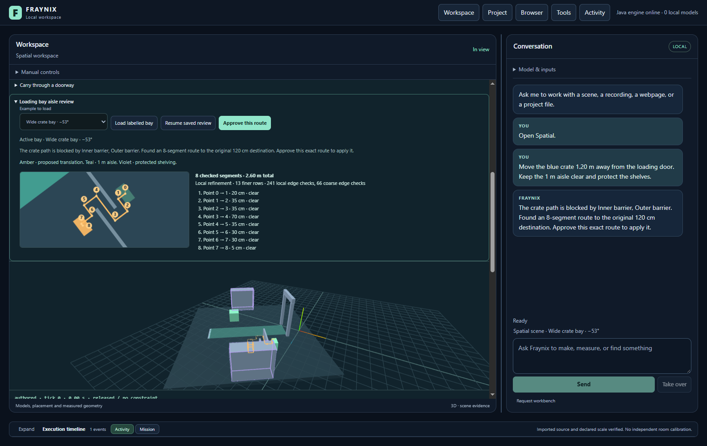
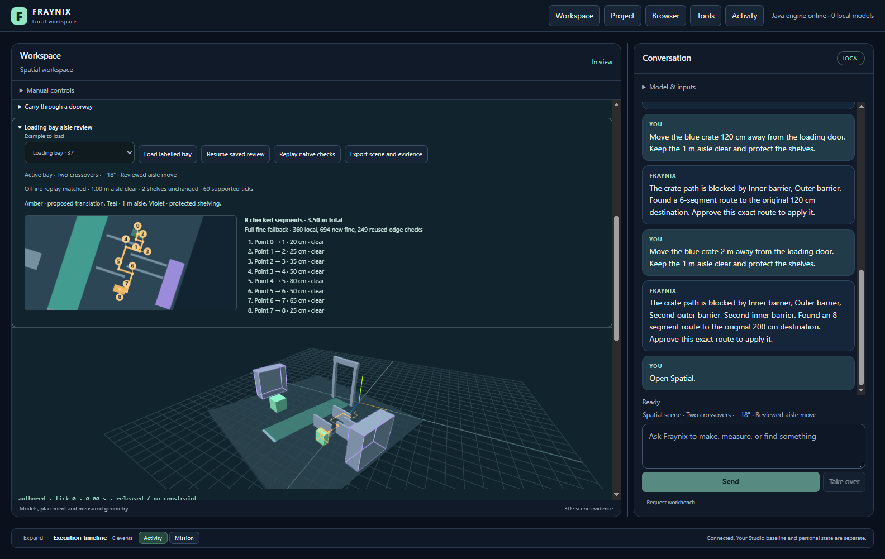
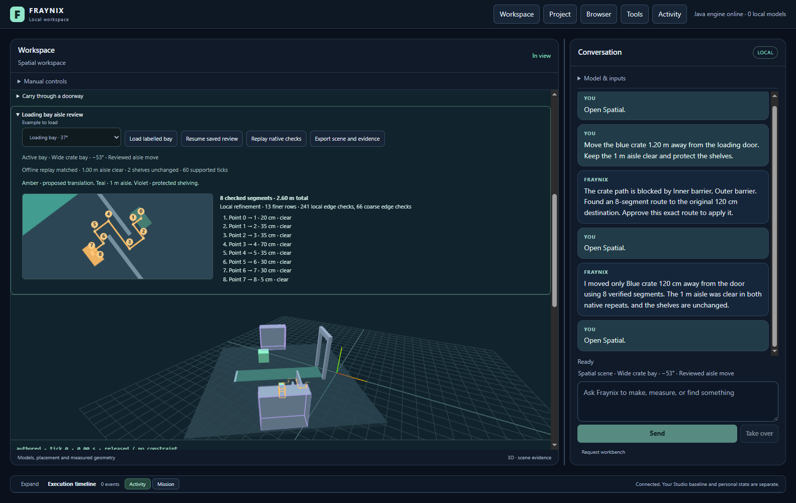

Refine crate routes near measured obstructions
Ask Spatial to move a crate. Review the localized search or full-grid fallback and each verified leg before approving.

Local refinement is shown before exact approval

The two-crossover bay replays its full-grid fallback offline

The approved localized route reproduces all leg checks after restart
System files
Open source